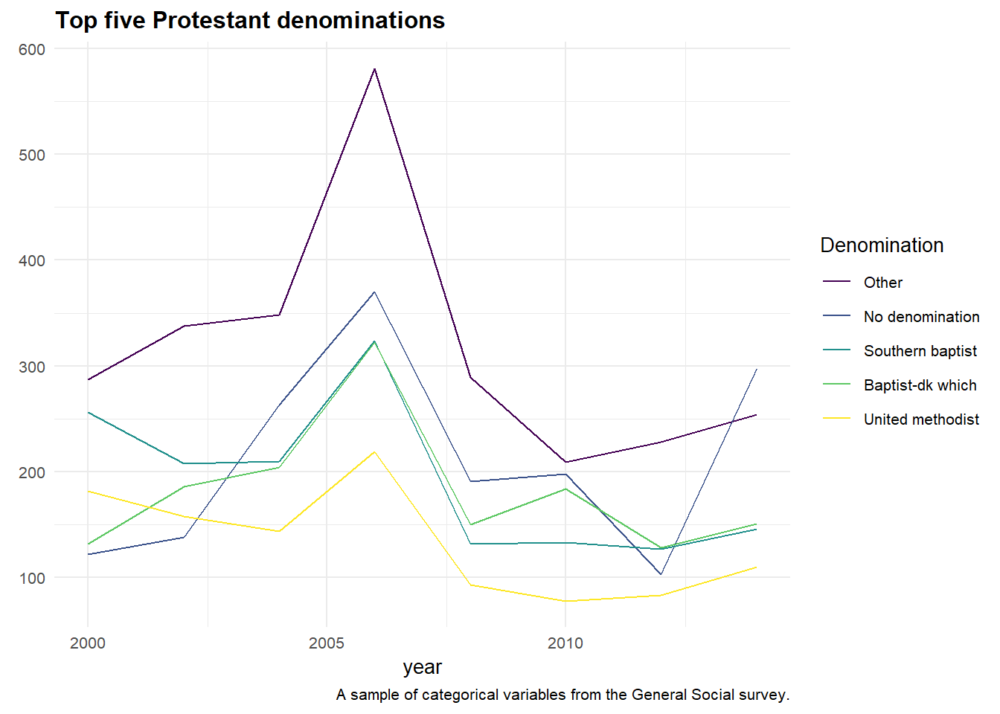

Often, I find myself with a lot of categorical variables that I want to plot, where I’m really only interested in the most common ones that bubble to the surface. This post is a quick demonstration of how I plot just the top 5 or top 10 categories for a plot. I posted a question about this over on Stack Overflow. Thanks to all who commented!
Getting started
To start, I am going to load forats::gss_cat as my example dataset and make a simple time series of the types Protestant denominations respondents list.
library(tidyverse)
gss <- forcats::gss_cat
gss %>%
filter(relig == "Protestant") %>%
count(year, denom) %>%
ggplot(aes(x = year, y = n, color = denom)) +
geom_line() +
scale_colour_viridis_d()Plotting the top five
Wow, what an extremely ugly and meaningless plot! What if I wanted to just plot the top 5 Protestant denominations? There are a bunch of ways to do this, but maybe the easiest I’ve found is to filter down to those denominations with dplyr and save that as a simple vector; then in a second step, build your plot by first filtering to just those five in the vector.
protestant_top <- gss %>%
filter(relig == "Protestant") %>%
count(denom, sort = TRUE) %>%
head(5) %>%
pull(denom) #creating a simple vector.
#same plot now but filtered first for just the top five.
gss %>%
filter(denom %in% protestant_top) %>% #filter like this.
count(year, denom) %>%
ggplot(aes(x = year, y = n, color = denom)) +
geom_line() +
scale_colour_viridis_d()That’s looking a little better!
Reordering factors
But there’s still a problem: my eyes have to hunt around to find which denomination is where, because the legend is in alphabetical order. What if the legend was ordered the same way the lines were plotted?
forcats really comes in handy here. Many useful functions in this package for working with factors start with fct_, and the one I am going to use is fct_reorder where I can order based off their count. It just takes two arguments: the factor or character vector and another vector to reorder them in ascending order. (You can also use the .fun argument to specify the mean or median for example.) Below, I can just give it n for the second argument. Lastly, .desc = TRUE orders it descending to align with the plot lines.
gss %>%
filter(denom %in% protestant_top) %>%
count(year, denom) %>%
mutate(denom = fct_reorder(denom, n, .desc = TRUE)) %>% #fct_reorder here.
ggplot(aes(x = year, y = n, color = denom)) +
geom_line() +
scale_colour_viridis_d()Looks great!
Cleaning up
The last thing I want to do is add labeling and make it look prettier. I have been using hrbrthemes lately with Roboto Condensed font, and I love it. Below are the settings I usually have in all my markdown docs.
theme_set(theme_minimal(base_size = 10) +
theme(plot.title = element_text(face = "bold"),
axis.text = element_text(size = 8))
)
gss %>%
filter(denom %in% protestant_top) %>%
count(year, denom) %>%
mutate(denom = fct_reorder(denom, n, .desc = TRUE)) %>% #fct_reorder here.
ggplot(aes(x = year, y = n, color = denom)) +
geom_line() +
scale_colour_viridis_d() +
labs(
title = "Top five Protestant denominations",
y = element_blank(),
color = "Denomination",
caption = "A sample of categorical variables from the General Social survey."
)